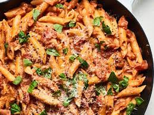

Tomatoe Base Sauce

What is the beauty of tom sauce pastas?
This particular type of pasta's base is made up of tomatoe products and in so is red and saucy.
Ingredients
- tomatoe ina can
- Salt
- pepper
- onion
- garlic
- olive oil
Cooking Directions
- Put olive oil into your fry pan
- Dice them onions and throw them in
- Let them become a golden brown
- Finely chop the garlic
- Trow dat shit in too
- when arromatic and not before burning, mix in your tomatoe can and simmer until thick. add salt and pepper to taste